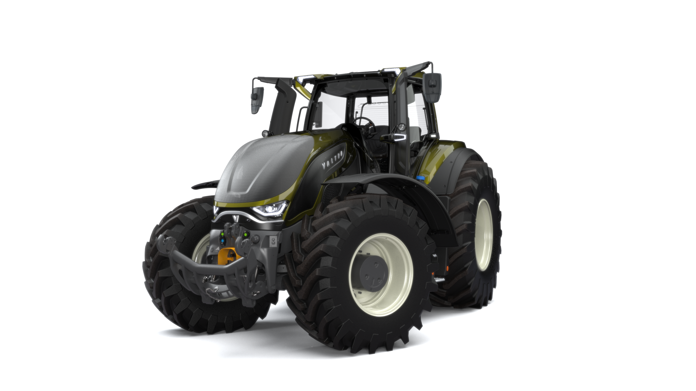

Valtra S Series Visualization
High-fidelity 3D renders and visual assets supporting marketing, UI presentation and product storytelling.
SAMU KARJALAINEN
Designing intuitive human–machine interfaces and visually refined digital experiences.

The Valtra S Series represents the latest generation of Valtra’s flagship tractors. It combines advanced technology, a cohesive design language, and a refined HMI ecosystem.

I am a multidisciplinary designer based in Jyväskylä, Finland, working at the intersection of industrial design, UI/UX, HMI systems and 3D visualization.
Over the past decade I have designed digital interfaces for heavy machinery and complex professional tools, with a focus on clarity, usability and visual refinement. My recent work centers around Valtra’s next-generation human–machine interfaces, where I have been responsible for the complete visual and interaction design of the Valtra Smart Display.
I enjoy designing systems where physical controls and digital interfaces feel like one coherent product. My strength lies in refining details all the way from first concept sketches to production-ready design systems.
Lead designer for the Valtra Smart Display user interface, responsible for UI logic, interaction flows, visual system, iconography, 3D content, menu architecture and component library. Designed a complete HMI system used across S, Q, N and G Series.
One-person studio offering branding, visual design, product imagery and web design for smaller companies.
3D modeling, concepting, technical drawings and visualization for clients such as Pole Bicycles and Kiho/Mastercom.
Primary digital interface for Valtra’s newest tractor generation, unifying machine data, guidance and implement control into one cohesive HMI.
The Valtra Smart Display is the primary digital interface in Valtra’s newest tractor generation. It brings machine data, settings, guidance and implement control together in one cohesive HMI.
Complete UI design (logic, flows), visual system, iconography, 3D content, menu architecture and component library. Collaboration with software and hardware teams to integrate with SmartTouch controls.
Limited graphics capabilities and strict performance constraints, while still needing a readable, modern interface. Complex functions had to be simplified for operators working long days in demanding environments.
Contributed to Red Dot, iF Design and Good Design awards as part of the wider Valtra product family.
A selection of projects combining industrial design, interface design and 3D visualization.
High-fidelity 3D renders and visual assets supporting marketing, UI presentation and product storytelling.
Concept UI for a lubrication system, focusing on clear feedback, system status and easy access to service views.
Visual system and 3D content aligning Smart Display and SmartTouch into a cohesive product family experience.